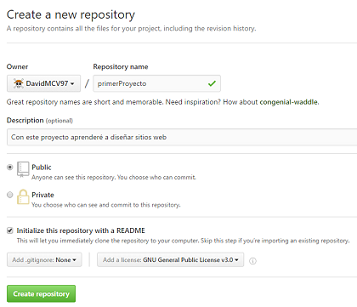

En este sitio web aprenderas a crear un sitio web. Para ello, te enseñaremos a utilizar los lenguajes HyperText Markup Language (HTML), Cascading Style Sheets (CSS) y JavaScript (js), así como a crear repositorios en linea de tu progreso.
Lo Básico
Lo primero que tendrás que hacer es conseguir las herramientas necesarias. Lo que necesitas hacer es:
- Crear una cuenta en Github para usar los repositorios
- Descargar Git para actualizar los repositorios
- Descargar Sublime para usar los lenguajes
Y estarás listo para comenzar. A continuación te damos los pasos que recomendamos para crear tus proyectos.
Paso 1: Creacion del repositorio
- Entra a tu perfil en Github
- Selecciona el botón "Start a project"
- Agrega un nombre y descripción claros y adecuados
- Selecciona la opción "Public"
- Selecciona la opcion "Initialize this repository with README"
- Agrega una licencia GNU
- Presiona crear
Paso 2: Clonación del repositorio
- Entra a GitBash
- Ingresa los siguientes comandos:
- cd desktop
- git clone *direccion web*
La direccion web la obtienes en github: entra al repositorio, presiona el botón verde "Clone or download" y copia la dirección que aparece
paso 3: Creación del index
Ahora usaremos Sublime para crear nuestro primer archivo HTML:

- Abre Sublime en tu computadora
- Presiona el botón file en la esquina superior derecha
- selecciona "New file"
- En la pestaña que apareció, presiona *ctrl + s*
- guarda el archivo con el nombre "index.html"
- copia literalmente el código de la imagen de la derecha
paso 4: Actualización del repositorio
Una vez creada y cada vez que se actualice tu página, deberás guardar los avances en gitbash para no perder nada. Aquí los pasos:
- Entra desde tu coputador a GitBash
- En el cuadro negro que aparece, ingresa los siguientes comandos:
- cd desktop
- cd *nombre de la carpeta*
- git status
- git add .
- git status
- git commit -m "Escribe aquí un pequeño resumen de qué haciste"
- git push
Nota: Aquí deberán aparecer los nombres de los archivos que componen la carpeta en rojo
Nota(2): ahora deberán aparecer los mismos pero en verde
La primera vez que realices el git push te pedirá que ingreses a tu cuenta de GitTube, esto es por seguridad y solo ocurre la primera vez.
Estos son los pasos mínimos para crear un sitio web de cero. A partir de ahora te enseñaremos a darle contenido y estilo.
Atributos de HTML
Los atributos son información adicional que le puedes dar a los elementos de tu página, aquí hay algunos ejemplos.
Titulos y parrafos
los titulos se escriben con la letra h y un número. El número refiere a la prioridad del titulo (1 = máxima prioridad, 6 = mínima prioridad). Los parrafos por otro lado se escriben con la letra p y tienen un solo tamaño.
ejemplo de titulo:
< h1>soy un titulo</h1>
ejemplo de parrafo:
<p>soy un parrafo<p>
Notas de texto (tooltip)
Se pueden poner notas sobre palabras que aparecerán cuando se sitúe el mouse sobre la palabra:
<p title="soy la nota">la nota se pondrá sobre mi<p>
Imagenes
para insertar una imagen se requiere guardar la imagen en tu repositorio y poner el siguiente código:
<img src="nombre_de_la_imagen.jpg">
hipervinculos
un hipervinculo envía al usuario a una dirección web especificada cuando se selecciona. Se escribe con la letra a y tiene un formato azul predeterminado. Aquí un ejemplo:
<a href = "www.direccionweb.com">